항공산업기사 (2011-06-12 기출문제)
1과목: 항공역학
1. 항공기 이륙거리를 짧게 하기 위한 설명으로 옳은것은?
- 항공기 무게와는 관계없다.
- 배풍(Tail wind)을 받으면서 이룩한다.
- 기관의 추력을 가능한 최대가 되도록 한다.
- 이륙시 플랩이 항력증가의 요인이 되므로 플랩을 사용하지 않는다.
(정답률: 89%)

2. 아음속 영역에 해당하는 마하수(M)의 범위는?
- M＜0.8
- 0.8＜M＜1.2
- 1.2＜M＜5.0
- 5.0＜M
(정답률: 79%)
3. 항공기 횡(가로)운동 중 나타날 수 있는 동적 불안 정성에 대한 설명으로 틀린 것은?
- 항공기가 방향 안정성이 결여되었을 경우 방향운동의 발산이 일어나며 외란이 주어질 경우 항공기는 회전을 하여 미끄러짐 각이 계속해서 증가하게 된다.
- 방향과 가로 안정성이 높을 경우 나선형 발산 운동이 나타나 외란이 주어지게 되면, 항공기는 점차적으로 나선형 운동에 진입하게 된다.
- 더치를(Dutch roll) 진동은 같은 주파수에 서로 위상이 다른 롤과 요우방향의 진동으로 특징지어지는 가로 진동과 방향진동이 결합된 현상이다.
- 윙록(Wing rock)이란 여러 개의 자유도에 동시에 영향을 미치는 복잡한 운동이며, 가장 기본이 되는 운동은 롤엣의 진동 현상이다.
(정답률: 59%)
4. 항공기의 무게가 6000kgf, 날개면적이 30m2인 제트기가 해발고도를 950km/h로 수평비행하고 있을 때 추력은 몇 kgf 인가? (단, 양항비는 6 이다.)
- 1000
- 6000
- 7500
- 7800
(정답률: 62%)
5. 유체에 완전히 잠겨있는 일정한 부피(V)를 갖는 물체에 작용하는 부력을 옳게 나타낸 것은? (단,
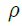
밀도,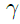
비중량, 아래첨자는 해당 물질을 의미한다.)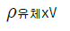
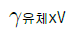
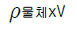
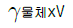
(정답률: 66%)
6. 다음 중 날개길이 방향의 양력분포가 균일한 날개는?
- 테이퍼 날개
- 뒤젖힘 날개
- 타원형 날개
- 직사각형 날개
(정답률: 73%)
7. 항공기에 작용하는 공기역학적 힘, 관성력, 탄성력이 상호작용에 의하여 생기는 주기적인 불안정한 진동을 무엇이라 하는가?
- 플러터(Flutter)
- 피치 업(Pitch up)
- 디프 실속(Deep stall)
- 피치 다운(Pitch down)
(정답률: 84%)
8. 프로펠러의 중심으로부터 35in 위치에서 프로첼러 깃각이 25°라면 기하학적 피치는 약 몇 in 인가?
- 102
- 110
- 1633
- 1795
(정답률: 44%)
9. 전진 비행중인 헬리콥터의 진행방향 변경은 어떻게 이루어지는가?
- 꼬리 회전날개를 경사시킨다.
- 꼬리 회전날개의 회전수를 변경시킨다.
- 주 회전날개깃의 피치각을 변경시킨다.
- 주 회전날개 회전면을 원하는 방향으로 경사시킨다.
(정답률: 82%)
10. 다음 중 ( ) 안에 알맞은 것은?
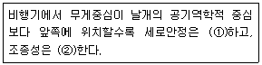
- ①감소 ②증가
- ①감소 ②감소
- ①증가 ②증가
- ①증가 ②감소
(정답률: 86%)
11. 프로펠러 깃단(tip)에서의 슬립(slip)을 나타낸 식으로 옳은 것은?
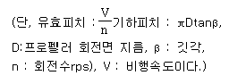
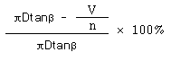
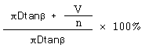
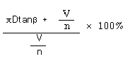
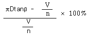
(정답률: 63%)
12. 자동 회전과 수직 강하가 조합된 비행으로 조종간을 잡아당겨서 실속시킨 후, 방향키 페달을 한쪽만 밟아 주는 조종동작으로 발생되는 비행은?
- 슬립비행
- 실속비행
- 스핀비행
- 선회비행
(정답률: 83%)
13. 프로펠러 비행기의 항속거리에 관한 설명으로 틀린 것은?
- 연료탑재량을 늘리면 항속거리가 증가된다.
- 프로펠러 효율이 크면 항속거리가 감소된다.
- 연료소비율을 작게 하면 항속거리가 증가된다.
- 양항비가 가장 작은 값으로 비행하면 항속거리가 감소된다.
(정답률: 70%)
14. 날개골 두께의 2등분점을 연결한 선을 무엇이라 하는가?
- 캠버
- 앞전 반지름
- 받음각
- 평균 캠버선
(정답률: 80%)
15. 헬리콥터가 정지비행 상태에서 전진비행 상태로 전환할때 주회전날개에 의하여 추가되는 양력을 무엇이라 하는가?
- 유도흐름(Induced flow)
- 세차양력(Precession lift)
- 전이양력(Translational lift)
- 불균형양력(Dissymmetry lift)
(정답률: 77%)
16. 항공기가 경사각 60°로 정상선회할 때 발생하는 하중배수는 얼마인가?
- 0
- 0.5
- 1
- 2
(정답률: 63%)
17. 다음 중 경계층 제어와 가장 관계 깊은 날개요소는?
- Tab
- Spoiler
- Slot
- Split flap
(정답률: 76%)
18. 전리층이 존재하기 때문에 전파를 흡수, 반사하는 작용을 하여 통신에 영향을 주는 대기층은?
- 대류권
- 중간권
- 성층권
- 열권
(정답률: 81%)
19. 항공기에서 사용되는 실용상승한도(Serviceceiling)란 상승률이 약 몇 m/s가 되는 고도인가?
- 0.1
- 0.5
- 1.0
- 1.5
(정답률: 71%)
20. 날개 시위선(Chord line)상의 점으로서 받음각이 변화하더라도 키놀이 모멘트(pitching moment)값이 변화하지 않는 점을 무엇이라고 하는가?
- 무게중심
- 공기력중심
- 풍압중심
- 공력평균시위
(정답률: 76%)
2과목: 항공기관
21. 다음 그래프는 가스터빈기관의 각 부분에 대한 내부 가스흐름의 어떤 특성을 나타낸 것인가?
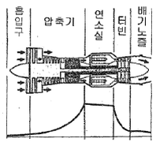
- 온도
- 속도
- 체적
- 압력
(정답률: 75%)
22. 비행 중이나 지상에서 기관이 작동하는 동안 조종사가 유압 또는 전기적으로 피치를 변경시킬 수 있는 프로펠러 형식은?
- 정속 프로펠러(Constant-speed propeller)
- 고정피치 프로펠러(Fixed pitch propeller)
- 조정피치 프로펠러(Adjustable pitch propeller)
- 가변피치 프로펠러(Controllable pitchpropeller)
(정답률: 76%)
23. 항공기기관에서 소기펌프(Scavenger pump)의 용량을 압력펌프(Pressure pump)보다 크게 하는 이유는?
- 소기펌프의 진동이 더욱 심하기 때문
- 압력펌프보다 소기펌프의 압력이 낮기 때문
- 윤활유가 저온이 되어 밀도가 증가하기 때문
- 소기되는 윤활유는 거품과 열에 의한 팽창으로 체적이 증가하기 때문
(정답률: 84%)
24. 그림은 어떤 장치의 회로를 나타낸 것인가?
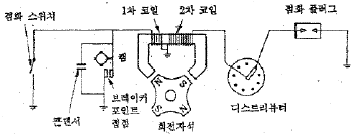
- 축전지 점화계통
- 혼합비 조절 연료계통
- 고압 마그네토 점화계통
- 저압 마그네토 점화계통
(정답률: 81%)
25. 브레이튼 사이클(Brayton cycle)은 어떤 기관의 이상적인 기본 사이클인가?
- 디젤기관
- 가솔린기관
- 가스터빈기관
- 스털링기관
(정답률: 81%)
26. 항공기 왕복기관에서 유입 공기에 의한 임팩트 압력 및 벤투리에 의한 부압의 차이로 유입 공기량을 측정하는 방식의 기화기는?
- 압력 분사식 기화기
- 부자식 기화기
- 경계 압력식 기화기
- 충동식 기화기
(정답률: 64%)
27. 왕복기관의 작동과정에 대한 설명으로 틀린 것은?
- 항공용 왕복기관은 4행정 5현상 사이클이다.
- 항공용 왕복기관에서 실제 일은 팽창행정에서 발생한다.
- 4행정기관은 각 사이클 당 크랭크축이 2회전함으로서 1사이클이 완료된다.
- 4행정기관은 2개의 정압과정과 2개의 단열과정으로 1사이클이 완료된다.
(정답률: 64%)
28. 프로펠러를 장비한 경항공기에서 감속기어(Reduction gear)를 사용하는 주된 이유는?
- 깃 길이를 짧게 하기 위하여
- 깃끝 부분에서의 실속방지를 위하여
- 프로펠러 회전속도를 증가시키기 위하여
- 깃의 진동을 방지하고 구조를 간단히 하기 위하여
(정답률: 82%)
29. 가스터빈기관의 시동계통에서 자립회전속도(Self-accelerating)의 의미로 옳은 것은?
- 시동기를 켤 때의 가스터빈 회전속도
- 기관에 점화가 일어나서 배기가스 온도가 증가되기 시작하는 상태에서의 가스터빈 회전속도
- 기관이 아이들(Idel) 상태에 진입하기 시작했을때의 가스터빈 회전속도
- 터빈에서 발생되는 동력이 압축기를 스스로 회전시킬 수 있는 상태에서의 가스터빈 회전속도
(정답률: 79%)
30. 수축형 배기노즐의 쵸크(Choke)현상에 대한 설명으로 틀린 것은?
- 마하 1 에서 가스의 흐름은 안정된다.
- 기관압력비(EPR) 계기가 1.89이상을 지시할 때 배기 노즐은 쵸크상태이다.
- 가스가 쵸크된 오리피스를 빠져나갈 때는 반경방향이 아닌 축방향으로 가속된다.
- 마하 1 이 되면 가스흐름은 대기로 열린 배기노즐에서 쵸크되어진다.
(정답률: 56%)
31. 왕복기관의 압축비가 너무 클 때 일어나는 현상이 아닌 것은?
- 조기점화(Preignition)
- 디토네이션(Detonation)
- 과열현상과 출력의 감소
- 하이드로릭 락(Hydraulic-lock)
(정답률: 71%)
32. 가스터빈기관의 연료가열기 작동검사에 대한 설명으로 틀린 것은?
- 연료가열기 작동 중 기관 압력비는 미세하게 떨어진다.
- 연료가열기에 의하여 연료온도가 상승함에 따라 오일 온도도 미세하게 상승한다.
- 필터 바이패스 등(Filter bypass light)이 켜지면 연료 가열장치는 작동이 정지된다.
- 계기판의 기관압력비, 오일온도, 연료필터 상태로 확인 가능하다.
(정답률: 60%)
33. 차압 시험기를 이용한 압축점검(Compressioncheck)을 피스톤이 하사점에 있을 때 하면 안되는 이유는?
- 폭발의 위험성이 있기 때문에
- 최소한 한개의 밸브가 열려있기 때문에
- 과한 압력으로 게이지가 손상되기 때문에
- 실린더 체적이 최대가 되어 부정확하기 때문에
(정답률: 79%)
34. 가스터빈기관 작동시 윤활계통에서 윤활유 압력이 규정값 이상으로 높게 지시되었다면 그 원인으로 볼수 없는 것은?
- 윤활유 공급관에 오물이 끼었다.
- 윤활유 공급관이 베어링 레이스와 접촉되었다.
- 윤활유 펌프의 릴리프 밸브 스프링이 파손되었다.
- 베어링 쪽에 공급하는 윤활유 제트가 오므라들었다.
(정답률: 57%)
35. 왕복기관이 완전히 정지하였을 때 흡입 매니폴드(Intake manifold)의 압력계가 나타내는 압력으로 옳은 것은?
- 0 inHg
- 59 inHg
- 대기압력
- 항공기 기종마다 다르다.
(정답률: 83%)
36. 가스터빈기관에 사용되는 윤활유의 구비조건으로 틀린 것은?
- 인화점이 높을 것
- 부식성이 클 것
- 유동점이 낮을 것
- 산화 안정성이 클 것
(정답률: 88%)
37. 왕복기관의 평균유효압력에 대한 설명으로 옳은것은?
- 사이클당 유효일을 행정거리로 나눈 값
- 사이클당 유효일을 행정체적으로 나눈 값
- 행정길이를 사이클당 기관의 유효일로 나눈 값
- 행정체적을 사이클당 기관의 유효일로 나눈 값
(정답률: 69%)
38. 원심식 압축기(Centrifugal flow compressor)의 장점이 아닌 것은?
- 시동 파워가 낮다.
- 단당 큰 압력상승이 가능하다.
- 축류식과 비교하여 구조가 간단하다.
- 단 사이의 에너지 손실이 적어 다축연결이 유용하다.
(정답률: 59%)
39. 그림과 같이 오토사이클의 p-v 선도에서 v1 = 5m3/kg, v2 = 1m3/kg 인 경우 압축비는 얼마인가?
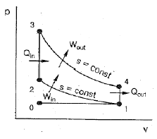
- 0.2
- 2.5
- 5
- 10
(정답률: 67%)
40. 다음 중 공기 흡입기관이 아닌 제트기관은?
- 로켓
- 램제트
- 터보제트기관
- 펄스제트
(정답률: 90%)
3과목: 항공기체
41. 항공기에 사용되는 금속재료를 열처리하는 목적으로 틀린 것은?
- 절삭성을 좋게 하기 위하여
- 내식성을 갖게 하기 위하여
- 마모성을 갖게 하기 위하여
- 기계적 강도를 개량하기 위하여
(정답률: 66%)
42. 스포일러에 대한 설명으로 틀린 것은?
- 일반적으로 스포일러 판넬은 알루미늄 합금 스킨데 접착된 허니컴 구조로 되어있다.
- 보조날개와 함께 작동시켜 조종에 이용되기도 한다.
- 동체에 부착된 스피드 브레이크를 지칭하는 것이다.
- 스위치 또는 핸들로 조종하고 유압에 의해 작동한다.
(정답률: 57%)
43. 항공기에 사용되는 비금속 재료인 플라스틱 중 열을 가하여 성형한 후 다시 열을 가하면 연해지는 특성의 재료는?
- 페놀수지
- 폴리에스테르수지
- 에폭시수지
- 폴리염화비닐수지
(정답률: 65%)
44. 페일세이프 구조 중 많은 수의 부재로 하중을 분담하도록하여 이 중 하나의 부재가 파괴되어도 구조전체에 치명적인 부담이 되지 않도록 한 그림과 같은 구조는?
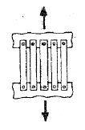
- 2중구조(Double structure)
- 대치구조(Back up structure)
- 다경로하중구조(Redundant structure)
- 하중경강구조(Load dropping structure)
(정답률: 89%)
45. 항공기 카울링에 사용되는 주스파스너(DzusFastener)의 머리에 있는 표식으로 알 수 있는 것은?
- 제조일자와 제조국가
- 재료재질과 제조업체
- 몸체길이, 몸체굵기, 재질
- 몸체직경, 머리종류, 파스너의 길이
(정답률: 73%)
46. 다음 중 항공기의 자기무게(Empty weight)에 포함 되지 않는 것은?
- 기체구조 무게
- 동력장치 무게
- 고정장치 무게
- 최대이륙 무게
(정답률: 78%)
47. 조종계통에서 케이블의 방향을 바꾸는데 사용되는 기구는?
- 풀리
- 페어리드
- 벨 크랭크
- 쿼드런트
(정답률: 67%)
48. 코터핀 장착 및 때기작업시 주의사항으로 옳은 것은?
- 최초 장착되었던 것을 같은 자리에 반복 사용하여 강도를 유지해야 한다.
- 주변 구조물의 손상을 방지하기 위하여 플라스틱 해머를 사용한다.
- 핀 끝을 접어 구부릴 때는 꼬아서 최대한 작게 해야 한다.
- 핀 끝을 절단할 때는 사선으로 절단하여 절단면을 쉽게 구분할 수 있도록 한다.
(정답률: 76%)
49. 리벳작업 시 리벳의 끝거리(Edge distance)와 피치(Pitch)에 대한 설명으로 옳은 것은?
- 피치는 리벳 열(column) 간의 거리를 말한다.
- 피치는 일반적으로 리벳지름의 10배에서 20배가 적당하다.
- 끝거리는 판재의 가장자리에서 첫째 번과 둘째 번 리벳 구멍의 중심거리를 말한다.
- 끝거리는 일반적으로 리벳지름의 2~4배가 적당하다.
(정답률: 68%)
50. 항공기 V-n(비행속도-하중배수)선도에서 플랩 등과 같은 공탄성에 의한 비행기의 위험을 피하기 위해서 제한하는 속도를 무엇이라 하는가?
- 실속속도
- 설계운영속도
- 설계순항속도
- 설계급강하속도
(정답률: 58%)
51. 항공기 파워 브레이크 시스템 셔틀 밸브(Shuttlevalve)의 기능은?
- 착륙할 때 앞바퀴가 바르게 유지하도록 한다.
- 브레이크 유압계통에서 발생하는 공기 기포를 배출 시킨다.
- 착륙할 때 노스 기어 타이어를 정면으로 향하게 한다.
- 브레이크 계통의 고장 발생시 비상 브레이크 계통으로 바꾸어준다.
(정답률: 79%)
52. 모노코크(Monocoque)구조에서 항공 역학적 힘의 대부분을 담당하는 부재는?
- 포머(Former)
- 스트링거(Stringer)
- 벌크헤드(Bulkhead)
- 응력표피(Stressed skin)
(정답률: 75%)
53. 비소모성 텅스텐 전극과 모재 사이에서 발생하는 아크열을 이용하여 비피복 용접봉을 용해시켜 용접하며 용접부위를 보호하기 위해 불활성가스를 사용하는 용접 방법은?
- 가스 용접
- MIG 용접
- 플라즈마 용접
- TIG 용접
(정답률: 73%)
54. 비행기의 원형 부재에 발생하는 전비틀림각과 이에 미치는 요소와의 관계로 틀린 것은?
- 비틀림력이 크면 비틀림각도 커진다.
- 부재의 길이가 길수록 비틀림각은 작아진다.
- 부재의 전단계수가 크면 비틀림각이 작아진다.
- 부재의 극단면 2차 모멘트가 작아지면 비틀림각이커진다.
(정답률: 74%)
55. 기체 수리방법 중 크리닝 아웃(Cleaning Out)이 아닌 것은?
- 커팅(Cutting)
- 트리밍(Trimming)
- 파일링(Filing)
- 크린업(Clean up)
(정답률: 78%)
56. 두께가 0.062" 인 판재를 그림과 같이 직각으로 굽힌다면 이 판재의 전체 길이는 약 몇 인치인가?
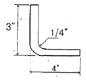
- 7.4
- 6.8
- 4.1
- 3.1
(정답률: 71%)
57. 그림과 같이 길이 L 전체에 등분포하중 q 를 받고 있는 단순보의 최대굽힘모멘트는?
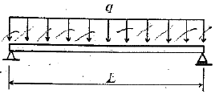
- q/L
- qL/2
- qL/4
- qL2/8
(정답률: 46%)
58. 지름이 10cm 인 원형단면과 1m 길이를 갖는 알루미늄 합금재질의 봉이 10N 의 축하중을 받아 전체길이가 0.025mm 늘어났다면 이때 인장변형율을 나타내기 위한 단위는?
- N/m2
- N/m3
- mm/m
- MPa
(정답률: 59%)
59. 항공기 리깅(Rigging)시 조종면이나 날개를 조절 또는 검사하기 전에 반드시 해주어야 하는 작업은?
- 세척 작업
- 평형 작업
- 기관 장탈 작업
- 조종면 유압제거 작업
(정답률: 74%)
60. 양극처리(Anodizing)에 대한 설명으로 틀린 것은?
- 처리 후 형성된 피막은 매우 가볍고 내식성과 절연성이 있다.
- 알루미늄 합금의 표면에 적용하는 크로메이트 처리 방법이다.
- 알루미늄 합금 구조물의 표면에 적용하는 부식방지법이다.
- 전해액에 전류를 흐르게 하여 양극화를 이용하는 방법이다.
(정답률: 63%)
4과목: 항공장비
61. Pitot-Static & Temperature Probe Anti-Icing System 에 결빙이 생기지 않도록 이용되는 것은?
- Patch Heater
- Electric Heater
- Gasket Heater
- Hot Pneumatic Air
(정답률: 73%)
62. 다음 중 VHF 계통의 구성품이 아닌 것은?
- 조정 패널
- 안테나
- 송·수신기
- 안테나 커플러
(정답률: 71%)
63. 압력조절기가 너무 빈번하게 작동하는 것을 방지하며, 갑작스럽게 계통압력이 상승할 때 압력을 흡수하는 유압 구성품은?
- 레저버
- 체크 밸브
- 축압기
- 릴리프 밸브
(정답률: 69%)
64. 정전용량 10㎌, 인덕턴스 0.01H, 저항 5Ω 이 직렬로 연결된 교류회로가 공진이 일어났을 때 전원전압이 20V라면 전류는 몇 A 인가?
- 2
- 3
- 4
- 5
(정답률: 62%)
65. 항공기 소화기의 소화제로 사용되는 질소에 대한 설명으로 틀린 것은?
- 중량이 비교적 무겁다.
- 불활성가스로 독성이 낮다.
- 밀폐된 장소에 사용하면 위험성이 있다.
- 질소를 액화하여 저장하는데 -30℃ 만 유지하면 되기 때문에 모든 항공기에서 사용한다.
(정답률: 72%)
66. 일반적으로 니켈-카드뮴 축전지의 1셀당 기전력은 약 몇 V 인가?
- 0.2
- 1.0
- 1.2
- 2.4
(정답률: 79%)
67. 유압 작동유 중 붉은색이며, 인화점이 낮아 항공기 유압계통에는 사용되지 않고 착륙장치의 완충기에 사용되는 작동유는?
- 식물성유
- 합성유
- 광물성유
- 동물성유
(정답률: 84%)
68. 관성항법장치에서 항공기의 방향, 진행 속도 및 위치를 계산하는 것은?
- 가속도계와 로란
- 가속도계와 도플러
- 자이로와 도플러
- 자이로와 가속도계
(정답률: 64%)
69. 비상조명계통(Emergency light system)에 대한 설명으로 옳은 것은?
- 비상조명계통은 비행시에만 작동된다.
- 비행시 비상조명스위치의 정상위치는 On 위치이다.
- 비상조명스위치는 Off, Test, Arm, On의 4 Position Toggle Switch 이다.
- 항공기에 전기공급을 차단할 때는 비상조명스위치를 Off 에 선택해야 배터리의 방전을 방지할 수 있다.
(정답률: 63%)
70. 고도계의 오차 중 탄성오차에 대한 설명으로 틀린 것은?
- 재료의 피로현상에 의한 오차이다.
- 백래시(Backlash)에 의한 오차이다.
- 크리프(Creep) 현상에 의한 오차이다.
- 온도변화에 의해서 탄성계수가 바뀔 때의 오차이다.
(정답률: 60%)
71. 그림과 같은 Wheatstone bridge가 평형이 되려면 X의 저항은 몇 Ω 이 되어야 하는가?
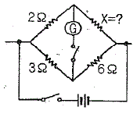
- 3
- 4
- 5
- 6
(정답률: 85%)
72. 마커 비컨(Marker beacon)에서 Inner Marker의 주파수와 등(Light)의 색은?
- 1300Hz, White
- 3000Hz, White
- 1300Hz, Amber
- 3000Hz, Amber
(정답률: 74%)
73. 항공계기와 그 계기에 사용되는 공함이 옳게 짝지어진 것은?
- 고도계 - 진공 공함, 속도계 - 차압 공함
- 고도계 - 전공 공함, 속도계 - 진공 공함
- 고도계 - 차압 공함, 속도계 - 진공 공함
- 고도계 - 차압 공함, 속도계 - 차압 공함
(정답률: 60%)
74. 다음 중 지상원조 시설이 필요한 항법장치는?
- 오메가 항법
- 도플러레이더
- 관성항법장치
- 펄스식 전파고도계
(정답률: 51%)
75. 미국연방항공국(FAA)의 규정에 명시된 고고도 비행항공기의 객실고도는 약 몇 ft 인가?
- 6000
- 7000
- 8000
- 9000
(정답률: 88%)
76. 솔레노이드 코일의 자계세기를 조정하기 위한 요소가 아닌 것은?
- 철심의 투자율
- 전자석의 코일 수
- 도체를 흐르는 전류
- 솔레노이드 코일의 작동 시간
(정답률: 74%)
77. 20해리(Nautical mile) 떨어진 물체를 레이더가 감지하는데 걸리는 시간은 약 몇 ㎲ 인가?
- 247
- 124
- 12
- 6
(정답률: 38%)
78. 다음 중 교류 전동기가 아닌 것은?
- 직권 전동기
- 동기 전동기
- 유도 전동기
- 유니버설 전동기
(정답률: 73%)
79. 주전원이 직류인 항공기에서 교류를 얻기 위해서 사용되고, 교류가 주전원인 경우에는 비상 교류전원으로 사용되는 장치는?
- 정류기
- 감쇠변압기
- 인버터
- 교류 전압 조절기
(정답률: 74%)
80. 항공기 비행 상태를 알기위한 목적으로 고도, 속도, 자세 등을 지시하는 항공계기는?
- 비행계기
- 기관계기
- 항법계기
- 통신계기
(정답률: 70%)